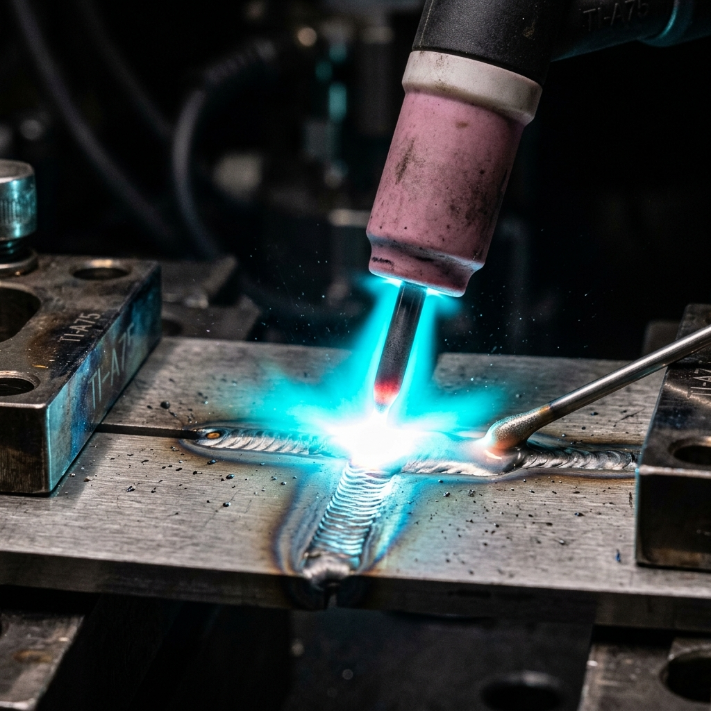
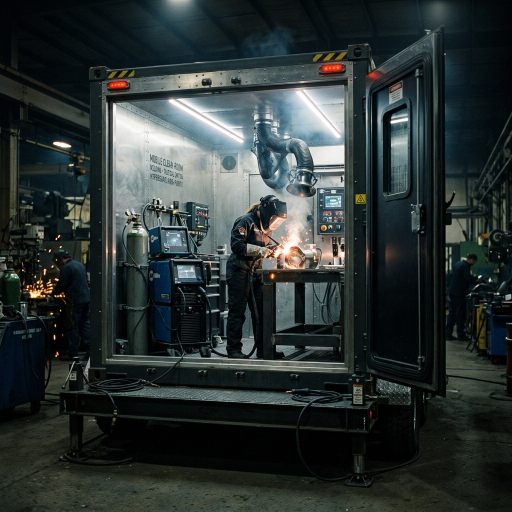
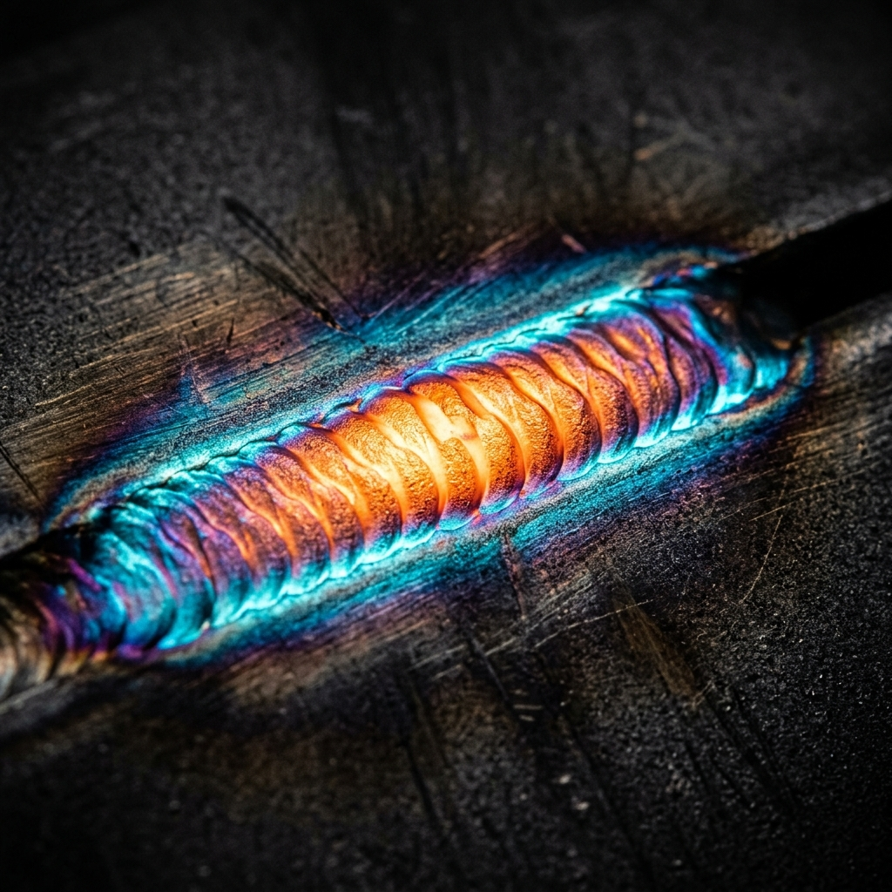

Surgical-grade metallurgy, deployed directly to the launchpad.
Private orbital launch operators, experimental fusion reactor facilities, and cryogenic plant managers cannot afford to dismantle massive infrastructure for factory repairs. When critical structural faults occur in high-stress, zero-tolerance environments, you require uncompromising perfection delivered directly to the point of failure. Xenon Arc Mobile Metallurgy provides rapid-deployment, ISO 4 mobile clean-room welding units for onsite, zero-defect titanium, inconel, and niobium fabrication. We execute x-ray verified, sub-millimetre tolerances under extreme time constraints and hostile environmental conditions. No compromises. No delays. Absolute structural integrity.
Our units are designed for hyper-rapid global deployment. Packed into bespoke, air-freightable containers, our mobile clean-rooms can be transported via heavy-lift cargo aircraft and helicopter directly to offshore platforms, remote desert launchpads, or high-security government installations. Inside these units, our master metallurgists operate in a perfectly controlled atmosphere, ensuring that your cryogenic fuel lines or high-pressure reactor vessels are welded without the slightest risk of atmospheric contamination.
Live Deployment Status

Operational Scope & Deployment Protocols
When a structural fault threatens a multi-million-pound launch programme or jeopardises the containment of a cryogenic facility, standard industrial repair solutions are radically insufficient. Our intervention protocols are categorised into strictly defined deployment tiers, designed to provide exactingly tailored responses to catastrophic material failures.
Phase Alpha: Triage
Upon contract initiation, our metallurgical engineers conduct an immediate telemetry review of the fault via encrypted channels. We assess the material composition, ambient environmental challenges, and exact physical dimensions of the necessary repair to select the appropriate consumable alloys and shielding gases.
Phase Beta: Incursion
The required ISO 4 mobile clean-room is dispatched via expedited air logistics. Our units arrive fully self-contained, requiring only a secure footprint to deploy. Once grounded, the module establishes a positive-pressure, atmospherically filtered environment around the targeted weld zone.
Phase Gamma: Execution
Our master welders execute the fabrication using advanced Tungsten Inert Gas (TIG) protocols. Every pass is meticulously recorded. Post-weld, we conduct immediate 100% radiographic testing (RT) and dye penetrant inspection onsite, certifying the component to AWS D17.1 Class A standards before demobilisation.
Material Capabilities & Tolerances
Working with exotic alloys requires absolute environmental control. The slightest introduction of oxygen or nitrogen during the welding of titanium results in embrittlement, catastrophic cracking, and guaranteed failure under stress. Our proprietary shielding methodologies prevent this entirely.
Alloys
- Titanium Grade 5 (Ti-6Al-4V)
- Inconel 718 / 625
- Cryogenic Stainless (304L/316L)
- Niobium C-103
- Monel & Hastelloy
Standardisation
- ISO 4 Clean-Room Environment
- 100% Radiographic Testing (RT)
- Sub-millimetre Precision
- AWS D17.1 Class A Certified
- ASME Boiler and Pressure Vessel Code

Tactical Intelligence (FAQ)
How quickly can a unit be operational globally?
Our primary staging facilities are located near major international freight hubs. Assuming immediate airspace clearance and logistical greenlights, our XA-series mobile units can be wheels-down and operational anywhere on the globe within 14 to 24 hours of contract finalisation.
Do you support highly classified or restricted government facilities?
Affirmative. Our metallurgical teams hold high-level security clearances, and our dispatch systems are designed to integrate seamlessly with strict military and governmental operational security protocols. We regularly deploy to dark sites and secure naval shipyards.
What are the logistical requirements for your clean-rooms?
Our units are remarkably self-sufficient. We require a hardstand area of approximately 20x10 metres and a stable industrial power supply (though we can deploy independent generators if necessary). The unit handles its own atmospheric scrubbing and positive pressure generation.
Do you handle non-aerospace industrial contracts?
While our primary focus is orbital launch operators and experimental reactors, we frequently service high-end cryogenic processing plants, deep-sea research submersibles, and specialised chemical manufacturing facilities requiring identical tolerances.
Emergency Contract Dispatch
Initiate a high-priority deployment sequence. A logistics commander will establish secure contact within 5 minutes. Provide accurate coordinates and material specifications to expedite the triage phase.
